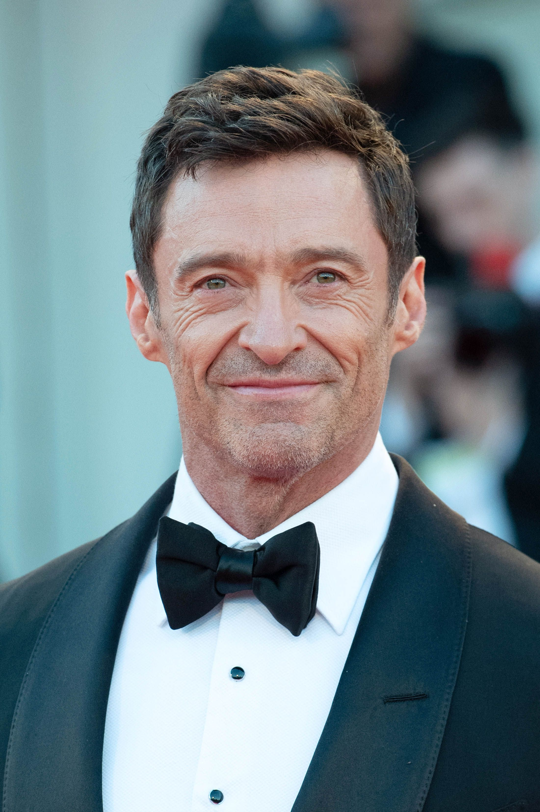

Hugh Michael Jackman es un actor, cantante y productor australiano celebrado por su versatilidad en el cine, la televisión y los escenarios. Conocido principalmente por interpretar a Wolverine en la franquicia de X-Men, también ha recibido elogios por sus papeles en películas como Los Miserables, El Prestigio, Australia y El Gran Showman. Su trabajo escénico incluye la obra ganadora del premio Tony "El Chico de Oz" y una reposición de "The Music Man". Los logros de Jackman incluyen premios Emmy, Grammy y dos Tony, además de una nominación al Oscar. En 2019, fue nombrado Compañero de la Orden de Australia.
| Año | Título | Personaje |
|---|---|---|
| 2026 | Three Bags Full: A Sheep Detective Movie | George Hardy |
| 2024 | Deadpool y Lobezno | Logan / Wolverine |
| 2024 | Megafauna: What Killed Australia's Giants? (serie) | Self - Narrator (voice) |
| 2023 | Australia: Faraway Downs (serie) | Drover |
| 2023 | Koala Man (serie) | Big Greg (voice) |
| 2022 | El hijo | Peter Miller |
| 2022 | Who's Talking to Chris Wallace? (serie) | Self |
| 2022 | Sunday with Laura Kuenssberg (serie) | — |
| 2022 | Bienvenidos al Wrexham Football Club (serie) | Self |
| 2022 | Recursos Humanos (serie) | Dante (voice) |
| 2021 | En la piel de James Bond, (The Daniel Craig Story) | Self (archive footage) |
| 2021 | Reminiscencia | Nicolas 'Nick' Bannister |
| 2019 | On Broadway | Self |
| 2019 | La estafa (Bad Education) | Frank Tassone |
| 2019 | Activate: The Global Citizen Movement (serie) | Self |
| 2019 | Mr. Link. El origen perdido | Sir Lionel Frost (voice) |
| 2018 | El candidato | Gary Hart |
| 2017 | Movie Musical Greats with Hugh Jackman | — |
| 2017 | El gran showman | P. T. Barnum |
| 2017 | Big Mouth (serie) | himself (voice) |
| 2017 | Logan | Logan / Wolverine / X-24 |
| 2016 | Eddie el Águila | Bronson Peary |
| 2015 | Pan: Viaje a nunca jamás | Blackbeard |
| 2015 | The Late Show with Stephen Colbert (serie) | Self |
| 2015 | Hollywood en primer plano (serie) | Self |
| 2015 | Dukale's Dream | Self |
| 2015 | Chappie | Vincent Moore |
| 2014 | Variety Studio: Actors on Actors (serie) | Self |
| 2014 | Interstellar: Nolan's Odyssey | Self |
| 2014 | X-Men: Días del futuro pasado | Logan / Wolverine |
| 2014 | Late Night with Seth Meyers (serie) | Self |
| 2014 | The Tonight Show Starring Jimmy Fallon (serie) | Self |
| 2013 | The Wolverine: Path of a Ronin | Self |
| 2013 | Rick y Morty (serie) | Hugh Jackman (voice) |
| 2013 | Prisioneros | Keller Dover |
| 2013 | Lobezno inmortal | Logan / Wolverine |
| 2013 | Les Misérables: The History of the World's Greatest Story | Self |
| 2013 | Circus Halligalli (serie) | — |
| 2012 | Los miserables | Jean Valjean |
| 2012 | El origen de los guardianes | E. Aster Bunnymund (voice) |
| 2012 | Show Me the Magic | Self |
| 2012 | Ink Master (serie) | Himself - Guest Judge |
| 2012 | Betty White's 90th Birthday: A Tribute to America's Golden Girl | Self |
| 2011 | Acero Puro | Charlie Kenton |
| 2011 | Butter | Boyd Bolton |
| 2011 | The Jonathan Ross Show (serie) | Self |
| 2011 | Snow Flower and the Secret Fan | Arthur |
| 2009 | 99 minutos en el Cielo | Self |
| 2009 | Wolverine Unleashed: The Complete Origins | Self |
| 2009 | Weapon X Mutant Files | Self |
| 2009 | X-Men orígenes: Lobezno | Logan / Wolverine |
| 2008 | Australia | The Drover |
| 2008 | La lista | Wyatt Bose |
| 2008 | Uncle Jonny | Uncle Russell |
| 2007 | Viva Laughlin (serie) | Nicky Fontana |
| 2007 | Inside The Fountain: Death and Rebirth | Himself |
| 2007 | ShowBusiness: The Road to Broadway | Self |
| 2007 | The Graham Norton Show (serie) | Self |
| 2007 | The Director's Notebook: The Cinematic Sleight of Hand of Christopher Nolan | Self |
| 2006 | La fuente de la vida | Tomás / Tom Creo / Tommy |
| 2006 | Happy Feet: Rompiendo el hielo | Memphis (voice) |
| 2006 | Ratónpolis | Roddy (voice) |
| 2006 | El truco final (El prestigio) | Robert Angier |
| 2006 | Scoop | Peter Lyman |
| 2006 | X-Men: La decisión final | Logan / Wolverine |
| 2005 | The Reichen Show (serie) | Self |
| 2004 | Almas Perdidas | Roger |
| 2004 | Profile of a Serial Killer | Eric Ringer |
| 2004 | Van Helsing: Misión en Londres | Gabriel Van Helsing (voice) |
| 2004 | Van Helsing | Van Helsing |
| 2004 | Making the Grade | Mr. Slattery |
| 2003 | X2 Global Webcast Highlights | Self |
| 2003 | The Second Uncanny Issue of X-Men - Making X2 | — |
| 2003 | The Ellen DeGeneres Show (serie) | Self |
| 2003 | X-Men 2 | Logan / Wolverine |
| 2003 | Cazados (serie) | Self |
| 2003 | X-Men: Premieres Around the World | Self |
| 2003 | Evolution X - The Making of X-Men | — |
| 2003 | Jimmy Kimmel Live! (serie) | Self - Guest Host |
| 2001 | Kate & Leopold | Leopold 'Leo' Mountbatten, Duke of Albany |
| 2001 | Good Day Live (serie) | Self |
| 2001 | Operación Swordfish | Stanley Jobson |
| 2001 | Siempre a tu lado | Eddie Alden |
| 2000 | X-Men | Logan / Wolverine |
| 2000 | X-Men (el documental) | Self - 'Logan / 'Wolverine' |
| 1999 | The Early Show (serie) | Self |
| 1999 | Erskineville Kings | Wace |
| 1999 | Rove (serie) | Self |
| 1999 | Teen Choice Awards (serie) | Self |
| 1999 | Paperback Hero | Jack Willis |
| 1997 | The View (serie) | Self |
| 1996 | The Daily Show (serie) | Invitado especial |
| 1995 | The Rat Tamer | Kevin Jones |
| 1995 | Correlli (serie) | Kevin Jones |
| 1994 | Halifax f.p. (serie) | Eric Ringer |
| 1994 | The Man from Snowy River (serie) | Duncan Jones |
| 1994 | Inside the Actors Studio (serie) | Self |
| 1993 | Late Night with Conan O'Brien (serie) | Invitado especial |
| 1993 | Blue Heelers (serie) | Brady Jackson |
| 1993 | Raw (serie) | Himself |
| 1992 | Morgenmagazin (serie) | Self |
| 1992 | The Tonight Show with Jay Leno (serie) | — |
| 1989 | Los Simpson (serie) | Janitor (voice) |
| 1988 | This Morning (serie) | Self |
| 1981 | Entertainment Tonight (serie) | Self |
| 1981 | Wetten, dass..? (serie) | Self |
| 1975 | Saturday Night Live (serie) | Self - Cameo (uncredited) |
| 1973 | The American Film Institute Salute to ... (serie) | Self |
| 1968 | 60 Minutes (serie) | Self |
| 1953 | The Oscars (serie) | Self |
| 1952 | Today (serie) | Self |
| 1948 | Bambi-Verleihung (serie) | Self |
| Año | Título | Personaje |
|---|---|---|
| 2026 | New Born [Off-Broadway] | -- |
| 2026 | Sexual Misconduct of the Middle Classes [Off-Broadway] | Jon |
| 2025 | Sexual Misconduct of the Middle Classes [Off-Broadway] | Jon |
| 2022 | The Music Man | Professor Harold Hill |
| 2014 | The River | Performer |
| 2011 | Hugh Jackman, Back on Broadway | Performer |
| 2009 | A Steady Rain | Denny |
| 2006 | The Boy From Oz: The Arena Musical [Australia] | Peter Allen |
| 2003 | The Boy From Oz | Peter Allen |
| 2002 | Carousel [Off-Broadway] | Billy Bigelow |
| 2002 | The Boy From Oz [New York] | Peter Allen |
| 1998 | Oklahoma! [West End] | Curly McLain |